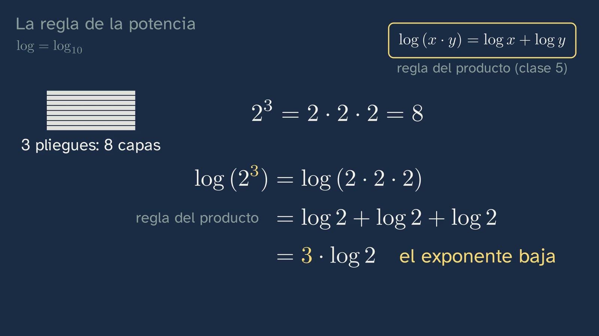
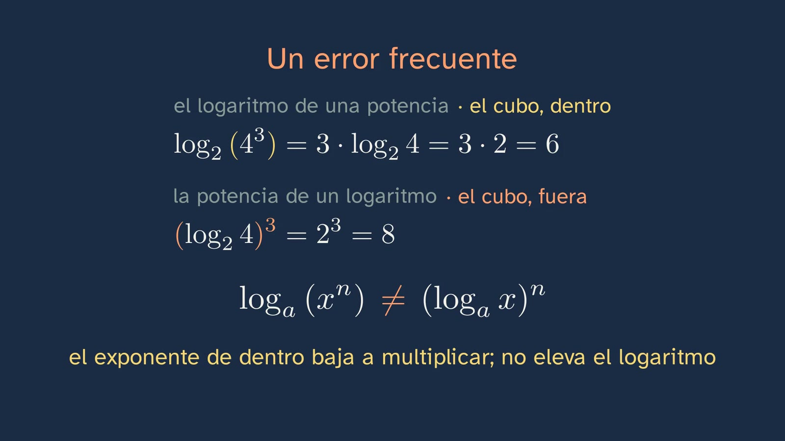
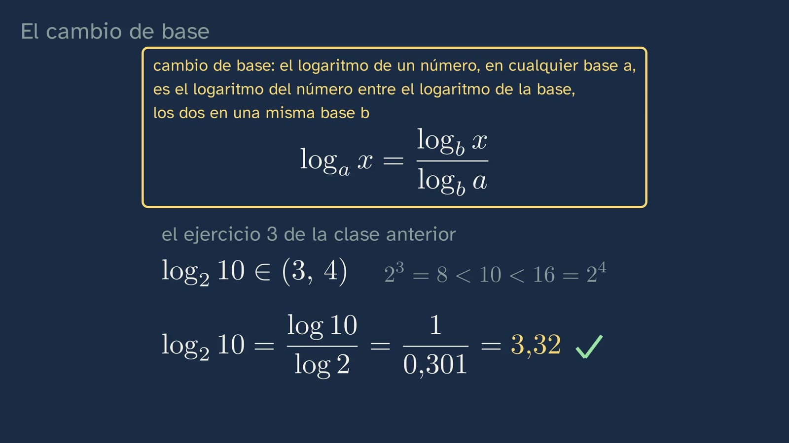
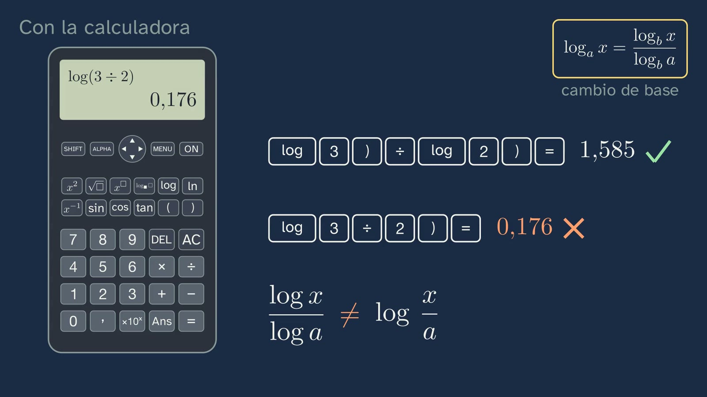

Properties of logarithms and change of base
In a nutshell
The class asks how you solve for an exponent, and the problem comes before the tool. It retrieves the product rule from class 5 (log₂ (4 · 8) = 2 + 3 = 5), which today gives the power rule, and corrects its three exercises in a minute. The hook is a thought experiment: how many times do you have to fold a 0.1 mm sheet of paper for it to reach the Moon? The sheet is folded on the board, layer by layer: each fold doubles the layers, so after n folds there are 2ⁿ, and 3.844 · 10¹² are needed for the 384,400 km of the mean distance. The unknown is up in the exponent, and it cannot be worked out in your head; and since the calculator's log is base 10, a change of base is announced in three steps: logarithms of both sides, bring the exponent down and solve. To bring it down, the power rule, derived from the product rule with the sheet's three folds, in base 10: log (2³) = log (2 · 2 · 2) = log 2 + log 2 + log 2 = 3 · log 2. It fits with the slide rule from class 5, where 2 was at 0.3 and 8 at 0.9: each fold, the same stretch. And it goes in its box: the logarithm of a power is the exponent times the logarithm of the number being raised, logₐ (xⁿ) = n · logₐ x, with x > 0 and with any exponent. The typical mistake, confusing the logarithm of a power with the power of a logarithm, is taken apart with numbers: with the cube inside, 6; with the cube outside, 8. With the rule, the sheet is solved, first with a "your turn" (bring n down): logarithms of both sides, n · log 2 = log (3.844 · 10¹²), n = 12.585 / 0.301 = 41.8, and 41 does not get there: 42 folds, and it is seen growing to scale: the column of paper passes Everest with 27, the 100 km of space with 30 and the Moon with 42. To think about: the last fold doubles it all. And it is a thought experiment: Britney Gallivan, a high-school student, folded a strip more than a kilometre long twelve times in 2002. That calculation was the change of base: log₂ 3 = log 3 / log 2 = 1.585, the number class 5 left pending, and in its box, in general, logₐ x = log_b x / log_b a, with any other base b, the same on top and below (with the calculator, b = 10), with the reason why the base cannot be 1. With the rule in its box comes exercise 3 from class 5: log₂ 10 = 1 / 0.301 = 3.32, between 3 and 4. How to key it in, also with the key that has a box for the base, and the other mistake: log x / log a is not log (x / a). And at the end, briefly, the physics: carbon-14, which halves every 5700 years or so ("the sheet in reverse"); a tenth is left when 2ᵏ = 10, after log₂ 10 = 3.32 half-lives, almost 19,000 years. The rules of logarithms, on a card, and the open question: why does our intuition fool us so badly with things that grow by multiplying?
Objective. By the end, students will be able to derive the power property of logarithms (the exponent comes down and multiplies) and apply it together with the product and quotient properties, solve for an unknown exponent, and work out any logarithm with the calculator by means of the change of base.
How it was made. With what the channel learned in class 5 (the notes of Ginés, who runs the channel): each rule in its box, in words and in symbols, said slowly and before it is used (ADR-144); each concept, with what it contains (ADR-149); the mathematics first and the physics application at the end, brief and deduced with the rules (ADR-145, 146 and 151); the solutions, in about a minute (ADR-148). Before designing it, the best YouTube videos on the topic were watched (Eddie Woo, Khan Academy, Susi Profe, Matemáticas profe Alex, 3Blue1Brown, Mathologer, TED-Ed): none of them uses logarithms to work out how many folds are needed, and none takes apart the two typical mistakes with numbers. The script was reviewed by an independent agent with the channel's rubric, and its nine mandatory changes have been applied (above all, sentences that, when heard, could be understood two ways). The first draft of the video was reviewed by two more, one for content and voice and another only for graphics, and what they saw has been corrected: each line on the board arrives with its words, nothing overlaps and everything can be read on a mobile phone. On seeing the third, Ginés noticed that, from the question of the sheet to its answer, the explanation became complex: there were two ways of discovering the rule, another rule of powers to prove it, a proof with letters and a mental calculation, six minutes between the question and the answer. It was remade with the student in mind: a single explanation, that of the product rule with the three folds, checked on the slide rule, and the sheet solved straight away, in about three minutes. Another agent reviewed it, reading it as a 16-year-old student who hears the video once, and what it found has been corrected (base 10 said aloud, and the typical mistake, which to the ear sounded the same as the right answer). The general proof of the rule, with letters, is in "In depth". On seeing the fourth, Ginés noticed that the meaning of the division on the slide rule was not getting across: it crossed two bases, stretches measured in base 10 to count a logarithm in base 2. It came out of the video and is also in "In depth"; exercise 3 from class 5 is solved directly with the rule in its box. On seeing the fifth, Ginés asked for six things: to say what the slide rule is (a measuring ruler for logarithms, the one from the previous class); the change-of-base box before the calculations that use it, which seemed "pulled out of a hat", and in small print, in view, where it is used; for the voice to say what is written in (1/2)ᵏ = 1ᵏ/2ᵏ = 1/2ᵏ; for the other sciences to have their purpose ("how many bits are needed for what?"); and a calculator drawn large, with its keys. While drawing it, the Casio and Texas Instruments manuals confirmed that the log key opens a bracket that has to be closed after the number, and the video shows it. Another agent read it again as a student who hears it once, and what it found has been corrected (for example, un décimo, "one tenth", which in Spanish also sounds like a lottery ticket, and la regla, "the rule", which by then could also mean the slide rule). And before seeing it, Ginés asked for it to be clear that with logarithms you calculate faster than by multiplying step by step: "if it looks more complex than just multiplying and dividing each time, we're on the wrong track". The class says so when it sets out the sheet and shows it after the 41.8: more than forty multiplications against one division. With the calculator, doubling forty-two times can also be done; what it does not give is the answer in one go, nor for any distance, nor with decimals (the 41.8, or the 3.32 half-lives of carbon-14, of which multiplying would only say "between 3 and 4"). On seeing draft 7, Ginés asked for eight touch-ups: the rows of the folds, all in the same format (2 = 2¹, 4 = 2 · 2 = 2², 8 = 2 · 2 · 2 = 2³), so that you can see where 2ⁿ comes from; to announce, on seeing that the base-2 logarithm does not come out of the calculator, that a change of base will be made and how, in three steps; to say what "the number" is (the layers needed to reach the Moon: the distance in millimetres divided by the tenth of a millimetre of each layer); to remove "with the Moon twice as far away, one more fold", which was confusing; to write the change of base in general, with another base b on top and below; to show the key sequence for the key with a box for the base (checked in the Casio manuals); and two fixes to the board (a countdown that overlapped the rule and a caption placed too close).
The words. "Logarithm of a power", logₐ (xⁿ), as against "power of a logarithm", (logₐ x)ⁿ: the class says them this way so that they are not confused when heard. "Change of base": writing a logarithm in one base with logarithms in another. "log", with no base, is the base-10 logarithm, the calculator's; "ln", the base-e logarithm, which arrives in topic 12. "Half-life" (periodo de semidesintegración): the time it takes for half the atoms in a radioactive sample to decay.
For readers outside Spain: the Bachillerato is the last two years of secondary school (ages 16–18). Mathematics I is the mathematics of the first year in the science and technology track; ESO is the compulsory secondary stage before it (ages 12–16). The video is in Spanish, with English subtitles; the images on this sheet come from the video and keep their Spanish text. In Spain the decimal separator is a comma and thousands are separated by a point, so the video writes 0,301 for 0.301 and 384.400 km for 384,400 km; and a Spanish billón is a million million, so the board's "casi 4 billones" is "almost 4 trillion" (3.844 · 10¹²). This sheet uses the English conventions.
Curriculum
Spain's Royal Decree 243/2022, Mathematics I, a subject of the science and technology track in the first year of Bachillerato (consolidated text in the Official State Gazette, BOE; the Mathematics annex has not changed since 2022). Our translation of the official Spanish text. Times are those of the video.
| Element | What the decree says | Where the class works on it |
|---|---|---|
| Core knowledge A.1 (A. Number sense, 1. Sense of operations) | "Strategies for operating with real numbers and vectors: mental or written calculation in simple cases and with technological tools in more complicated ones." | log 8 ≈ 0.9 = 3 · 0.3, on the slide rule (5:01); log₂ 3, log₂ 10 and log₃ 20 with the calculator and the change of base (9:38, 10:30, 12:01) |
| Core knowledge D.3 (D. Algebraic sense, 3. Equality and inequality) | "Solving equations, inequalities and systems of non-linear equations and inequalities in different contexts." | 2ⁿ = 3.844 · 10¹², the sheet that reaches the Moon (6:56); (1/2)ᵏ = 1/10, carbon-14 (13:19); the bacterium in exercise 3 |
| Core knowledge D.4 (D. Algebraic sense, 4. Relations and functions) | "Properties of the different classes of functions, including polynomial, exponential, irrational, simple rational, logarithmic, trigonometric and piecewise functions: understanding and comparison." | It prepares the ground: the properties of logarithms are those of the logarithmic function, in topic 12 |
| Core knowledge F.1 (F. Socio-affective sense, 1. Beliefs, attitudes and emotions) | "Handling error, individually and collectively, as something that mobilises previously acquired knowledge and creates learning opportunities in the mathematics classroom." | log (xⁿ) ≠ (log x)ⁿ (6:01) and log x / log a ≠ log (x / a) (10:56) |
| Criterion 1.1 | "To handle some strategies and tools, including digital ones, in modelling and solving problems from everyday life and from science and technology, evaluating their efficiency in each case." | The sheet, modelled (2ⁿ layers) and solved (2:30–7:50); the calculator and its base key (11:30) |
| Criterion 2.1 | "To check the mathematical validity of the possible solutions to a problem, using reasoning and argument." | 41 folds do not get there and 42 do (8:14); log₂ 3 = 1.58, the one from class 5 (9:57); log₃ 20 falls in (2, 3) (12:19) |
| Criterion 5.1 | "To show an integrated view of mathematics, investigating and connecting different mathematical ideas." | The power rule comes from the product rule (4:28–5:01); the change of base solves exercise 3 from class 5 (10:30); the intervals from class 4, to check (12:01) |
| Criterion 6.1 | "To solve problems in diverse situations, using mathematical processes, establishing and applying connections between the real world, other areas of knowledge and mathematics." | The sheet to the Moon and carbon-14 (12:46) |
| Criterion 8.2 | "To recognise and use mathematical language in different contexts, communicating information with precision and rigour." | The logarithm of a power as against the power of a logarithm, said and written (6:01) |
| Criterion 9.1 | "To face situations of uncertainty, identifying and managing emotions and accepting and learning from error as part of the process of learning mathematics." | The bet on the folds (2:16) and the two typical mistakes |
Specific competences 1, 2, 5, 6, 8 and 9. The class also serves Mathematics Applied to the Social Sciences I: "Powers, roots and logarithms: understanding and using their relations to simplify and solve problems" (A.3 of that subject). And it connects with Physics and Chemistry (radioactivity, which is studied in second-year Physics) and with Biology (the growth of a population).
What students bring. From lower secondary (ESO): powers and their rules, scientific notation and the calculator. From class 5: what a logarithm is, the product and quotient rules, log = log₁₀ and the slide rule. From class 4: intervals.
How the class is built
Video chapters
About 16 minutes (16:35), in 9 chapters, with one thread: when what you don't know is in the exponent, the logarithm brings it down. First the mathematics, and the physics at the end. Each rule goes in its yellow box, with its words and its symbols, and is said slowly before it is used; in the detailed explanations, the voice is 10% slower. It has one stop to think (the last fold, 8:14). Ximena appears on camera four times, about twenty-five seconds in all: to say hello, with the hook (1:46), halfway through (8:53) and to say goodbye (16:29).
| Chapter | What happens | Why this way |
|---|---|---|
| What we'll see (0:00) | Ximena says hello. The map of the topic's six classes, with the sixth highlighted, and the question: "How do you solve for an exponent?". | Topic 1 keeps its numbered map. |
| What you already know (0:13) | What is the logarithm of a product equal to?, with log₂ (4 · 8) as the example. A short silence, with no countdown. The rule in its box and 2 + 3 = 5, checked (0:27). | Retrieving what is needed today: the power rule comes from the product rule (ADR-147 and 150). |
| Solutions to the previous class (0:44) | log₃ 81 = 4, counting threes; 80 against 50 dB, × 1000 (1:04); log₂ 10 in (3, 4) (1:23). | Brief, each with its question in view (ADR-148). |
| A sheet to the Moon (1:46) | The hook, to camera. The sheet is folded on the board: 2, 4 and 8 layers (1:55). The bet, with a countdown (2:16). The layers, row by row and in the same format (2 = 2¹, 4 = 2 · 2 = 2², 8 = 2 · 2 · 2 = 2³), 2ⁿ, and the ones needed, the layers to the Moon: 2ⁿ = 3.844 · 10¹² (2:30). The unknown, in the exponent: multiplying by two over and over does not say how many times, and with a logarithm it is a single calculation (3:36); the calculator's log is base 10, so a change of base is announced, in three numbered steps (logarithms of both sides, bring the exponent down, solve). | The problem before the tool (article 15; Kapur, 2008), and explaining with the object: the real sheet, layer by layer. |
| The power rule (4:28) | In base 10, the calculator's. The three folds: 2³ = 2 · 2 · 2, and with the product rule, in view in its box, log (2³) = log 2 + log 2 + log 2 = 3 · log 2: the 3 comes down in front of the logarithm. On the slide rule from class 5, 2 at 0.3 and 8 at 0.9, three equal stretches (5:01). In its box (5:36). The typical mistake, with the cube inside and outside (6:01). | From the concrete to the rule, and the rule before it is used (ADR-144). A single explanation, with the sheet and with what the student already has: the product rule and the slide rule. |
| Forty-two folds (6:33) | Logarithms of both sides, and a "your turn": bring n down, with the rule in view and a countdown. n comes down and is solved for (6:56). n = 12.585 / 0.301 = 41.8 (7:12), and the bets, crossed out. What we have saved: more than forty "× 2", checking each time whether it is there yet, against a single division, the same for any distance (7:34). 41 does not get there: 42 folds, and the column that grows to scale: Everest, space, the Moon (7:50). To think about: the last fold (8:14). A thought experiment, with Britney Gallivan (8:31). Ximena halfway through (8:53). | It answers the student's bet with an animation to scale (articles 17.3 and 17.7): so that the size is felt. |
| The change of base (9:00) | The sheet's calculation was the change of base announced, and the rule goes straight into its box, in general: logₐ x = log_b x / log_b a, with any other base b, the same on top and below; with the calculator, b = 10 (9:00); x and the base, positive, and why the base cannot be 1 (9:38). Then the calculations, with the box in view: log₂ 3 = log 3 / log 2 = 1.58, the number from class 5 (9:57), and exercise 3 from class 5: log₂ 10 = 1 / 0.301 = 3.32, in (3, 4) (10:30). On a drawn calculator, how to key it in (the log key opens a bracket, which is closed after each number) and the second mistake (10:56). The key with a box for the base, with its key sequence (log▪□, the base, ▶, the number, =), and ln (11:30). Stop and think: log₃ 20, with the rule in small print in view (12:01–12:19). | The rule in its box before the calculations that use it, and in view while it is used (ADR-144 and ADR-188); tested on a known number and used straight away in an exercise the student has already started. Its meaning on the slide rule, in "In depth": in the video it crossed two bases and did not get across (ADR-188). |
| What it's for: carbon-14 (12:46) | Every 5700 years or so, half: (1/2)ᵏ = 1/2ᵏ, each step said as it is written. A tenth when 2ᵏ = 10: after log₂ 10 = log 10 / log 2 = 3.32 half-lives, almost 19,000 years (13:19). Other sciences, each with its purpose: the bacteria in exercise 3 and the 30 bits of a nine-digit phone number (14:10). | The physics, at the end, brief and deduced with the rules (ADR-146 and 151). |
| Practice and keep thinking (14:44) | The rules of logarithms, on a card, with the two mistakes. Three exercises (15:26). The open question (15:58). The next topic (16:16) and the goodbye. | The solutions open the next class. |
Bridges with other subjects. Physics: radioactivity (second year). Biology: the growth of a population (exercise 3). Computing: each bit doubles the possible numbers, as each fold doubles the layers, so bits are a logarithm base 2: a nine-digit phone number needs log₂ 10⁹ = 29.9, so 30 bits (14:10).







A plan for a 50-minute lesson
Designed for watching the video in class, in sections, with the student worksheet.
| Minutes | What to do |
|---|---|
| 0–5 | No video, in pairs: "Before watching the video", on the worksheet. Each pair writes down its bet on the number of folds to the Moon. |
| 5–12 | Video up to 4:28 (the solutions, the sheet and the unknown in the exponent). |
| 12–20 | Video up to 6:56. Stop after the box with the rule (5:36) to copy it, and at the "your turn" (6:33): each pair brings n down before going on. |
| 20–27 | Video up to 9:00: the sheet solved. The bets are compared with 42. |
| 27–35 | Video to the end. |
| 35–45 | The real folds activity or the change of base with the paper slide rule (below), or the exercises on the worksheet. |
| 45–50 | Whole-class discussion of the open question. |
Typical mistakes and how they are handled
- "log (xⁿ) = (log x)ⁿ." It is the class's mistake (6:01). It is taken apart with numbers: log₂ (4³) = 3 · log₂ 4 = 6, but (log₂ 4)³ = 2³ = 8. It helps to read it aloud as the class says it: "the logarithm of the power", with the cube inside, as against "the power of the logarithm", with the cube outside, and to look at where the bracket goes.
- "log x / log a = log (x / a)." The class's second one (10:56), very common when keying it in: log 3 / log 2 = 1.585, but log (3 / 2) = 0.176. The change of base is a quotient of logarithms, not the logarithm of a quotient. When keying it in there is another stumbling block: the log key opens a bracket, and if it is not closed after the 3, the calculator understands log (3 ÷ log 2) = 0.998. You also see "log x / log a = log x − log a", which confuses the quotient of logarithms with the logarithm of the quotient.
- Bringing the exponent down when it does not apply to the whole argument: log (2 · 3²) = 2 · log (2 · 3), instead of log 2 + 2 · log 3. The power rule only holds if the power is everything inside the logarithm.
- Stopping at 41.8 folds, or rounding to 41. Folds come one at a time and 41 does not get there: the solution to the problem is 42 (8:14). It is a good moment for criterion 2.1.
- "The change of base only works with base 10." It works with any base, as long as it is the same on top and below: with ln you get the same result (11:30).
- Using the rule with x ≤ 0. log ((−2)²) exists (it is log 4), but 2 · log (−2) does not: the rule requires x > 0.
Questions and solutions
Stop and think (in the video)
- What is the logarithm of a product equal to? For example, log₂ (4 · 8). (0:13, with no countdown) The sum of the logarithms: 2 + 3 = 5, and 4 · 8 = 32 = 2⁵.
- Your bet: how many folds to the Moon? (2:16) The answer is 42. It is common to bet thousands or millions.
- Your turn: bring n down. (6:33) log (2ⁿ) = n · log 2, by the power rule; so n · log 2 = log (3.844 · 10¹²).
- log₃ 20: first, between which two whole numbers? Then, with the calculator. (12:01) 3² = 9 < 20 < 27 = 3³: in (2, 3). log 20 / log 3 = 1.301 / 0.477 = 2.727.
The stop to think
- The last fold (8:14). With 41 folds, the sheet measures 219,902 km, 57% of the distance; fold 42 doubles it, to 439,805 km. The last fold on its own adds as much as all the previous ones put together. To go further in class: since n = log₂ (layers), if the layers are multiplied by 2, n goes up by 1 (product rule), so with the Moon twice as far away 43 would be enough (it was removed from the video: heard in passing, it was confusing). And: the Moon is between about 363,300 km (perigee) and 405,500 km (apogee) from us, so 41 never gets there and 42 always does (NASA, "Moon Fact Sheet").
Practice (the solutions open the next class, the first of topic 2)
- 2 · log 5 + log 4, without a calculator. 2: by the power rule, 2 · log 5 = log 25; by the product rule, log 25 + log 4 = log 100 = 2. What will come up: log 9 (adding 5 + 4 inside the logarithm); 2 · log 9.
- log₂ 1000, with the calculator; first, between which two whole numbers? 2⁹ = 512 < 1000 < 1024 = 2¹⁰: in (9, 10). log 1000 / log 2 = 3 / 0.30103 = 9.966. What will come up: 2.699 (keying in log (1000 / 2)); 0.1003 (dividing the wrong way round, log 2 / log 1000).
- A bacterium divides in two every 20 minutes; starting with one, when are there more than a million? After n divisions there are 2ⁿ bacteria; 2ⁿ = 10⁶ gives n = 6 / log 2 = 19.93, so 20 divisions are needed (2¹⁹ = 524,288 and 2²⁰ = 1,048,576): 20 · 20 = 400 minutes, 6 h 40 min. It is a model: 20 minutes is the fastest Escherichia coli divides in a rich laboratory medium (Sezonov et al., 2007), and no population grows like this for long, because it runs out of food. What will come up: 19.93 minutes (forgetting to multiply by 20); 6.64 hours (not converting the decimal part into minutes: 0.64 h is not 64 min).
From the student worksheet
- Before watching the video. 8 layers after 3 folds; 1024 after 10. 2³ = 2 · 2 · 2 = 8: after 3 folds, 2³ layers. log₂ 8 = 3; log₂ (8 · 4) = 3 + 2 = 5.
- The power rule, with gaps. log₂ (8²) = 2 · log₂ 8 = 2 · 3 = 6, and 8² = 64 = 2⁶. log (10⁴) = 4. log₃ (9⁵) = 5 · log₃ 9 = 5 · 2 = 10.
- The change of base, with gaps. 5² = 25 < 30 < 125 = 5³: between 2 and 3. log 30 / log 5 = 1.4771 / 0.6990 = 2.113.
- One more, with the sheet. 100 km = 10⁸ mm, so 10⁸ / 0.1 = 10⁹ layers are needed; 2ⁿ = 10⁹ gives n = 9 / log 2 = 29.9: 30 folds.
- One more, with the mistake. log (2⁵) = 5 · log 2 = 1.5051 (it is log 32); (log 2)⁵ = 0.30103⁵ = 0.0025. The exponent inside comes down to multiply; it does not raise the logarithm to a power.
- A challenge, without a calculator. 2⁴² = 4 · (2¹⁰)⁴ ≈ 4 · (10³)⁴ = 4 · 10¹² layers; times 0.1 mm, 4 · 10¹¹ mm = 400,000 km: more than the distance to the Moon (the exact calculation gives 439,805 km).
Keep thinking. Why does our intuition fool us so badly with things that grow by multiplying? The class leaves it open. For the debate: in everyday life, almost everything grows by adding (one more step, one more day), and that is how we estimate; what doubles over and over shoots up at the end, and the last step weighs as much as all the previous ones put together. It is the same question as that of the chessboard and the grains of wheat, of compound interest or of an epidemic in its early days. If the idea that "people don't understand exponentials" comes up in class, it is best presented as a research question, not as a fact: the class cites no study.
In depth
The power rule with any exponent. The class derives it with a whole-number exponent (log 2³ = log 2 + log 2 + log 2) and says that it holds with any exponent; that is needed, because the sheet's n comes out as 41.8. The general proof, for anyone who asks for it: if x = aᵐ, m = logₐ x; then xⁿ = (aᵐ)ⁿ = aᵐ·ⁿ, and taking logₐ of both sides, logₐ (xⁿ) = logₐ (aᵐ·ⁿ) = m · n = n · logₐ x. It uses the power of a power, (aᵐ)ⁿ = aᵐ·ⁿ, with m, which is hardly ever a whole number (log₂ 3 = 1.58…). In the draft it was shown in the video and was removed: it was the stretch that made the class complex. In topic 2 we see that a^(p/q) is the qth root of a^p, defined so that the rules still hold; irrational exponents, such as log₂ 3, are defined by approaching them with fractions (the number line with no gaps from class 3), and the rules are preserved by continuity. With that, log √x = ½ · log x is a case of the power rule.
What the division in the change of base means. On the slide rule from class 5, each number is at the distance of its log₁₀ from 1, and multiplying by 2 is moving along the stretch from 1 to 2, which measures 0.301. log₂ 3 counts the times you have to multiply by 2 to reach 3: the stretches from 1 to 2 that fit between 1 and 3, one whole one and a little over half of another, 0.477 / 0.301 = 1.58. Along the whole rule, the copies fall on 2, 4 and 8, and the fourth would reach 16: log₂ 10 = 1 / 0.301 = 3.32. It was in the video until draft 4 and came out: it mixes two bases (lengths in base 10 to count a logarithm in base 2) and, heard only once, it did not get across. In class, with the paper slide rule in hand, it can be followed (see "The change of base with the paper slide rule").
42 folds in your head. 2¹⁰ = 1024 ≈ 10³, so 2⁴⁰ = (2¹⁰)⁴ ≈ 10¹² and 2⁴² ≈ 4 · 10¹². Times 0.1 mm, about 400,000 km. It is the same trick that gives log 2 ≈ 0.3 (10 · log 2 = log 1024 ≈ 3), and the one on the student worksheet.
Britney Gallivan. In January 2002, in her junior year of high school, she folded in half, in a single direction, a strip of toilet paper about 1200 m (4000 feet) long, in Pomona (California); Guinness World Records lists it as the record for folds. A month earlier, in December 2001, she had derived a formula for the minimum length of a strip folded n times in one direction, L = (π t / 6)(2ⁿ + 4)(2ⁿ − 1), with t the thickness (Gallivan, 2002, published by the Historical Society of Pomona Valley; MathWorld, "Folding"). With t = 0.1 mm and n = 12 it comes to about 879 m. In 2011, some students at St. Mark's School (Massachusetts) reached 13 folds with about 16 km of paper, joining strips with tape. The formula contains 2ⁿ: how many folds a given strip allows can also be solved with logarithms.
Carbon-14, with more physics. The half-life recommended today is 5700 ± 30 years (LNHB/DDEP; IAEA); the classic value, 5730 ± 40 (Godwin, 1962). Laboratories calculate "radiocarbon ages" with Libby's value, 5568 years, by convention, and then calibrate them, because the proportion of carbon-14 in the air has not always been the same. The class only calculates how long it takes for a tenth to be left (about 18,900 years), without dating any remains. The method reaches back to about 50,000 years (Oxford Radiocarbon Accelerator Unit).
The calculator. The Spanish-market Casio fx-570SP X II and fx-991SP X II and the ClassWiz fx-82SP CW, fx-570SP CW and fx-991SP CW have a logarithm key with the base in a box ("log▪□"); on some, log with no base goes with SHIFT. With it you key in the base, the right arrow (▶) to move to the other box, the number and =: log₂ 16 = 4 is "log▪□ 2 ▶ 16 =", and only with the screen in natural display mode (Casio, manuals for the fx-83GT CW and fx-991ZA PLUS II). It is worth students checking it on their own model. On the Casio ClassWiz and the TI-30X, the log key writes "log(" and the bracket is closed after the number (Casio, manual for the fx-83GT X / fx-85GT X, "Calculation Priority Sequence": functions with a bracket, such as log(, "require a closing parenthesis after the argument"; TI-30X Pro, "Logarithm and Exponential Functions"). Only the last bracket, just before the =, can be left out: that is why "log 3 ÷ log 2 =" without closing the first one gives log (3 ÷ log 2) = 0.998. The video shows it on a drawn calculator, with no brand.
Two classroom activities
The real folds (about 15 minutes, in groups). Each group folds an ordinary sheet of paper in half as many times as it can, and writes down the layers and how long and how thick it is each time (with a ruler; from the fourth fold on, the thickness is easier to measure on the whole stack). Then: how many layers does it have after its last fold? Why is the next one so hard? (With each fold, half as long and twice as thick: the thickness grows as 2ⁿ and the length is divided by 2ⁿ.) For anyone who wants more: with Gallivan's formula, how much paper would be needed for 13 folds?
The change of base with the paper slide rule (about 20 minutes, in pairs; the paper slide rule from class 5 will do). With the strip marked at 10 cm per unit of logarithm, each pair measures, with compasses or a strip of paper, the stretch from 1 to 2 (3.0 cm) and counts how many times it fits into the stretch from 1 to 3 (4.8 cm), from 1 to 5 (7.0 cm) and from 1 to 10 (10 cm). Then they check it with the calculator: log₂ 3 = 1.58; log₂ 5 = 2.32; log₂ 10 = 3.32. And if you measure with the stretch from 1 to 3? (log₃ x.)
Open resources
| Resource | What it is | What for |
|---|---|---|
| NASA, "Moon Fact Sheet" | The Moon's data: mean distance, perigee and apogee, size | Checking the 42 with the Moon nearer and further away |
| MathWorld, "Folding" | Gallivan's formula, with its reference, in English | The real folds activity |
| Oxford Radiocarbon Accelerator Unit, "Radiocarbon dating" | How carbon-14 dating works, in English | The physics of the application, in more detail |
| GeoGebra | Free graphing calculator, with log(b, x) for any base | Checking the change of base and drawing 2ˣ and log₂ x |
| MacTutor (University of St Andrews) | Biographies of Napier, Briggs and Stifel, in English | The history of logarithms, with its sources |
What the class leaves out, and why
The class has one question, how you solve for an exponent, and whatever does not answer it is left out.
- The root, log √x = ½ · log x: it is the power rule with n = ½, but it requires knowing what a fractional exponent is, which arrives in the next class, the first of topic 2.
- log_b a = 1 / log_a b, a consequence of the change of base: for the classroom, with log₂ 10 · log 2 = 1.
- The number e and the natural logarithm (ln): topic 12, with the exponential function. The class only says that the ln key exists and that with it the change of base works the same way.
- Exponential and logarithmic equations in general, and the logarithmic function: topic 12.
Sources
- Royal Decree 243/2022, annex II, Mathematics, consolidated text (BOE, in Spanish): https://www.boe.es/buscar/act.php?id=BOE-A-2022-5521. Lower secondary (ESO): Royal Decree 217/2022 (BOE, in Spanish): https://www.boe.es/buscar/act.php?id=BOE-A-2022-4975.
- The distance to the Moon: NASA Science, "Moon Facts", and NASA NSSDC, "Moon Fact Sheet".
- The thickness of paper: technical data sheets for 80 g/m² paper (ISO 534), from 98 to 110 µm.
- Britney Gallivan: Guinness World Records, "Most times to fold a piece of paper"; MathWorld, "Folding"; Science News, "Folding paper in half twelve times".
- Carbon-14: LNHB/DDEP, C-14 table; IAEA, LiveChart of Nuclides; Oxford Radiocarbon Accelerator Unit.
- Everest: the measurement by China and Nepal announced on 8 December 2020 (8848.86 m). The Kármán line: Fédération Aéronautique Internationale (FAI), cited by National Geographic.
- E. coli: Sezonov, G., Joseleau-Petit, D. and D'Ari, R. (2007). Escherichia coli physiology in Luria-Bertani broth. Journal of Bacteriology, 189(23), 8746–8749.
- Kapur, M. (2008). Productive failure. Cognition and Instruction, 26(3), 379–424.
- Every calculation on this sheet has been checked by running it with Python (
verificacion-datos.md).
About this class
GinCol Lab is a free science channel for curious minds. Ximena is an illustrated character, not a real person, and her voice is synthetic: computer-generated with Microsoft Azure AI Speech and not imitating any known person. The board is animated with Manim. The script and this sheet are written by an AI (Claude, by Anthropic) and reviewed by a person before publishing. Every fact has been checked in two sources or in the original, and every calculation by running it. The photos of the Moon and the Earth are by NASA and in the public domain. The images on this sheet come from the board of the video itself. This English version was translated by the same AI and reviewed by a person. If you spot a mistake, tell us: learning also means correcting.
This sheet is published under a Creative Commons Attribution 4.0 licence: you can copy it, adapt it and use it in your classroom, crediting GinCol Lab.
How to cite this sheet
GinCol Lab (2026). Properties of logarithms and change of base. GinCol Lab teacher sheet: Mathematics I · 1st year of Bachillerato · The real numbers · Class 6 of 6. https://gincollab.github.io/aula/en/matematicas-i/t01-c6/. CC BY 4.0.
GinCol Lab teacher sheet · CC BY 4.0 · Source and errata